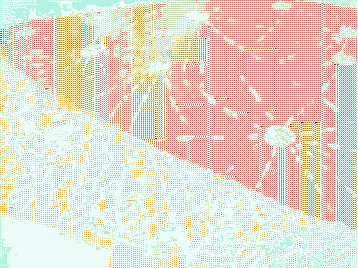

Next: Soneto Dadaísta (Pozimi) Up: mutsaz inverno pozimi Previous: Índice
| http://siliamoan.wordpress.com/2010/08/23/significando/http://siliamoan.wordpress.com/2010/08/23/significando/ |

Gambiarra é respeitar o processo.
Deixar que o tempo interfira na obra.
Transformar o erro em uma nova forma de traço.
Mesmo parados, estamos pulsando e ligados.
Deixar isso vir à tona faz parte do processo.
Não delimitar áreas e ver a beleza das beiras se misturando.